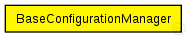
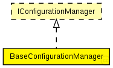

This documentation is released under the Creative Commons license
This documentation is released under the Creative Commons licenseDummy module for a ConfigurationManager that has no configuration. If you use this BaseConfigurationManager you must configure the node manually
See also: IConfigurationManager
Author: Till Steinbach

The following diagram shows usage relationships between types. Unresolved types are missing from the diagram. Click here to see the full picture.
The following diagram shows inheritance relationships for this type. Unresolved types are missing from the diagram. Click here to see the full picture.
// // Dummy module for a ConfigurationManager that has no configuration. // If you use this BaseConfigurationManager you must configure the // node manually // // @see IConfigurationManager // // @author Till Steinbach simple BaseConfigurationManager like IConfigurationManager { }
This documentation is released under the Creative Commons license